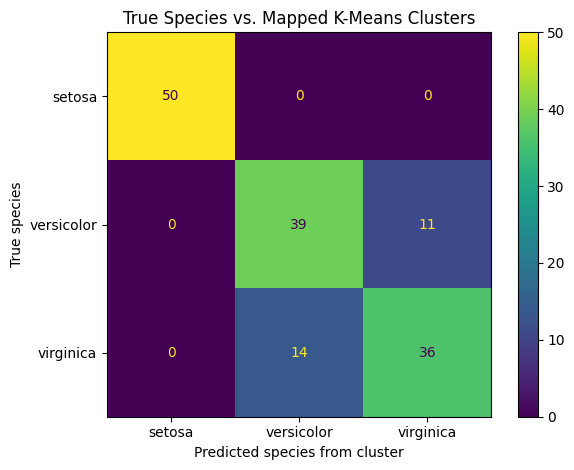
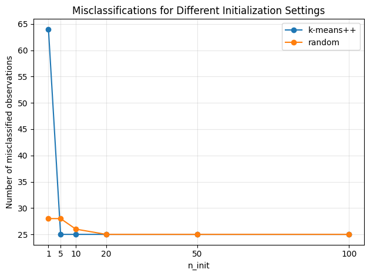
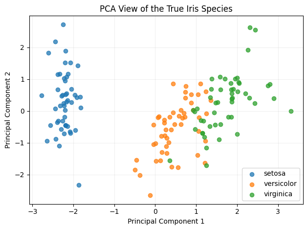
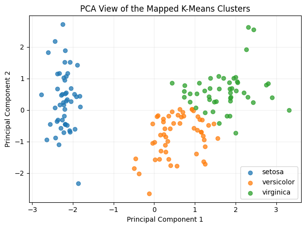

PROJECT 03
Iris Species K-Means Clustering
An unsupervised machine learning project using K-Means clustering to discover natural groups in the Iris dataset and compare them with the known flower species.
OVERVIEW
Project Overview
The objective of this project was to apply K-Means clustering with K=3 to the Iris dataset and evaluate how closely the resulting clusters corresponded to the three known species.
Because K-Means is an unsupervised learning algorithm, the species labels were excluded from training and used only after clustering for evaluation.
DATA
Dataset
The Iris dataset contains 150 flower observations belonging to three equally represented species.
Observations
150
FlowersInput Variables
4
FeaturesSpecies
3
ClassesObservations per Species
50
Balanced DatasetMETHODOLOGY
Data Preprocessing
The identifier column was removed because it does not contain meaningful biological information. The Species column was excluded from model training because K-Means must discover clusters without using known class labels.
The four numerical measurement features were standardized using StandardScaler because K-Means relies on Euclidean distance and can be affected by differences in feature scale.
MODEL
K-Means Clustering
K-Means was configured with three clusters because the Iris dataset contains three known species.
Since cluster labels such as 0, 1, and 2 are assigned arbitrarily, the clusters were aligned with the known species labels before evaluating the results.
RESULTS
Final Model Performance
The selected K-Means configuration produced stable clusters using k-means++ initialization and 20 initialization runs. The externally mapped cluster agreement with the known species was approximately 83.33%.
Cluster Agreement
83.33%
After Label MappingMisclassified
25
ObservationsSilhouette Score
0.459
Cluster SeparationAdjusted Rand Index
0.620
Cluster AgreementOPTIMIZATION
Choosing init and n_init
Different combinations of initialization method and n_init were evaluated to determine how centroid initialization affected clustering stability.
k-means++ reached the best observed clustering solution with fewer initialization attempts than random initialization.
With k-means++, the clustering result became stable by 20 initialization runs. Increasing n_init to 50 or 100 produced no additional improvement.
K = 3, init = k-means++, n_init = 20, random_state = 42.
VISUALIZATIONS
Cluster Analysis

Cluster vs. Species Comparison
Setosa was separated perfectly, while the misclassifications occurred between Versicolor and Virginica.

Initialization Stability
Increasing n_init reduced the risk of poor centroid initialization and produced a more stable solution.

True Species
PCA was used to reduce the four standardized features to two dimensions for visualization.

K-Means Clusters
The mapped K-Means clusters show strong separation for Setosa and overlap between Versicolor and Virginica.
KEY FINDINGS
What the Results Show
All 50 Setosa observations were grouped correctly, showing that this species is clearly separated in the feature space.
Eleven Versicolor observations were grouped with Virginica and fourteen Virginica observations were grouped with Versicolor.
After optimal cluster-to-species mapping, the clusters matched approximately 83.33% of the known class labels.
The first two principal components preserved most of the information in the standardized four-feature dataset and provided a useful visualization of the cluster structure.
TOOLS
Technologies Used
KEY TAKEAWAYS
What I Learned
K-Means discovers groups using only feature similarity and does not learn from known class labels.
Standardizing the measurements prevents features with larger numerical ranges from dominating Euclidean distance.
Cluster IDs must be aligned with known labels before making an external comparison with species.
PROJECT RESOURCES
Explore the Full Project
Review the notebook for the complete preprocessing, K-Means experiments, cluster evaluation, and PCA visualization workflow.